길 위의 예배자들, 로드(ROAD) 찬양단이 열어 가는 지역교회 연합의 새 길
자전거 라이딩 중 지촌교회당에서 흘러나온 찬양 한 곡이 청도의 장터로 이어졌다. 다섯 목회자의 동역이 총회와 한국교회에 던지는 울림을 짚어 본다.
자전거 페달을 밟던 다섯 목회자가 잠시 쉬어 가던 지역교회 예배당에서 흘러나온 찬양 한 곡이 청도의 장터까지 이어졌다. 대한예수교장로회(합동) 경청노회 청도 동부시찰회 소속 홍승열·홍왕천·김광철·김영광·이만형 목사가 2025년 10월 결성한 ‘로드(ROAD) 찬양 선교회’는 한 달에 한 번 동곡장·산내장·청도장을 찾아 노방 찬양으로 복음을 전하며, 이웃 교회의 인적 자원을 서로 채워 주는 연합 사역의 새로운 모델을 써 내려가고 있다.
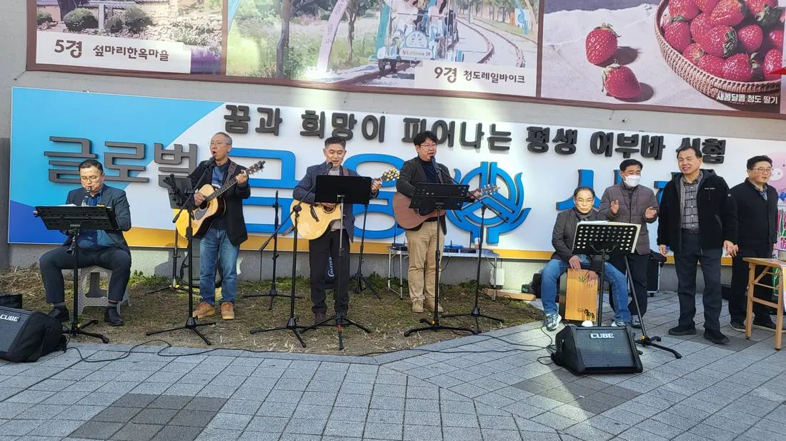
자전거 길 위에서 받은 부르심
이야기는 2025년 10월, 청도 동부시찰회 소속 다섯 목회자가 자전거 운동으로 교제하던 어느 날 시작됐다. 라이딩 도중 지촌교회당에서 잠시 숨을 고르던 그 평범한 휴식의 순간, 홍왕천 목사와 김영광 목사의 입술에서 찬양이 흘러나왔다. 그것은 단순한 노래를 넘어 그 자리에 모인 이들의 마음을 울리는 영적 감동이 되었다.
그때 홍승열 목사가 거룩한 제안을 꺼냈다. 우리끼리 부르는 찬양에 머물지 말고 길거리의 영혼들에게 복음을 전하는 찬양 선교를 시작하자는 것이었다. ‘길 위에서 주님을 증거하는’ 로드 찬양 선교회는 그렇게 탄생했다.
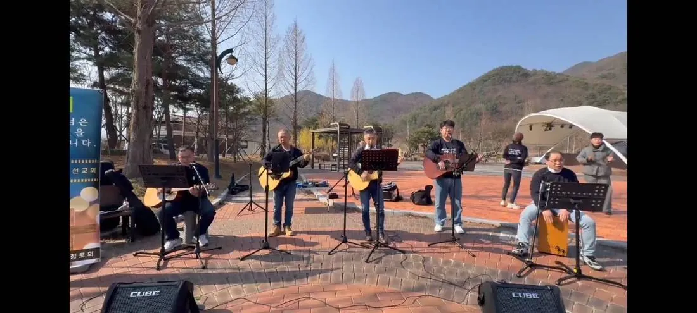
우리의 발걸음이 머무는 곳마다 찬양의 향기가 퍼지고, 복음의 길이 열리길 소망한다. — 로드(ROAD) 찬양 선교회 비전 선언
다섯 목회자, 각자의 달란트로 세운 한 몸
로드 찬양 선교회는 다섯 목회자가 자신의 달란트를 따라 역할을 나누어 유기적으로 동역한다. 기획과 방향을 세우는 디렉터, 살림을 챙기는 단장, 현장 소리를 책임지는 사운드 디렉터, 그리고 목관과 기타로 찬양의 뼈대를 세우는 세션이 맞물려 하나의 사역을 이룬다.
| 직함 | 성명 | 소속 교회 | 주요 역할 |
|---|---|---|---|
| 디렉터 | 홍승열 목사 | 신지교회 | 기획 총괄 및 사역 방향성 제시 |
| 단장 | 김광철 목사 | 동산교회 | 운영 관리, 재정 및 후원 행정 총괄 |
| 사운드 디렉터 | 홍왕천 목사 | 지촌교회 | 음향 시스템 구축 및 현장 사운드 엔지니어링 |
| 클라리넷 세션 | 김영광 목사 | 신원교회 | 목관 악기 선율로 찬양의 깊이와 영성 고취 |
| 기타 세션 | 이만형 목사 | 중남교회 | 어쿠스틱 기타 연주로 음악적 뼈대 구축 |
디렉터 홍승열 목사(신지교회)
‘찬양 선교’의 첫 제안자이자 사역의 방향을 그리는 홍승열 목사는 로드 찬양단이 청도의 산동과 산서를 하나로 잇는 데 큰 역할을 할 것이라고 강조한다.
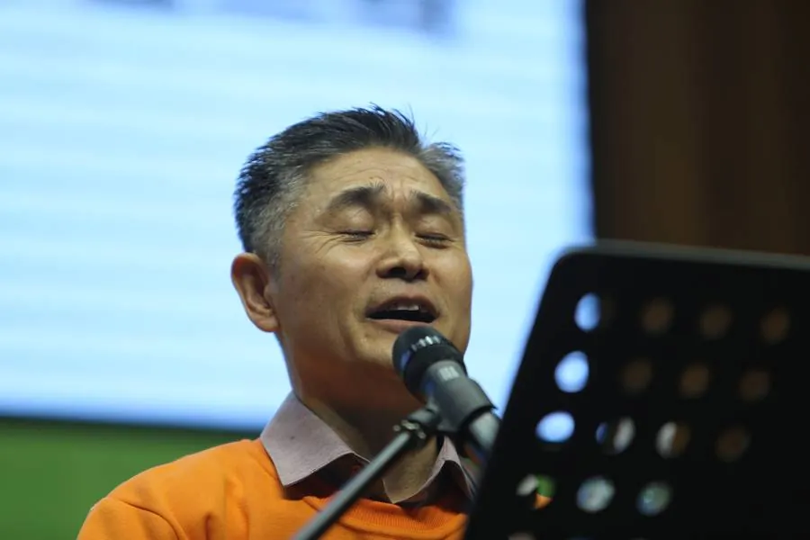
단장 김광철 목사(동산교회)
운영과 재정, 후원 행정을 도맡아 선교회의 살림을 지키는 단장이다. 무대 뒤의 수고가 있기에 장터의 찬양이 끊이지 않는다.
사운드 디렉터 홍왕천 목사(지촌교회)
자전거 길 위에서 찬양이 처음 울려 퍼진 곳이 바로 홍왕천 목사가 섬기는 지촌교회당이었다. 음향 시스템 구축과 현장 사운드 엔지니어링을 맡아, 거리 어디서나 찬양이 또렷이 닿도록 돕는다.
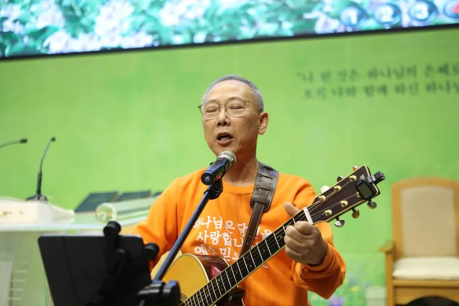
클라리넷 세션 김영광 목사(신원교회)
지촌교회당의 첫 찬양을 함께 나눈 김영광 목사는 클라리넷의 부드러운 선율로 찬양의 깊이와 영성을 더한다.
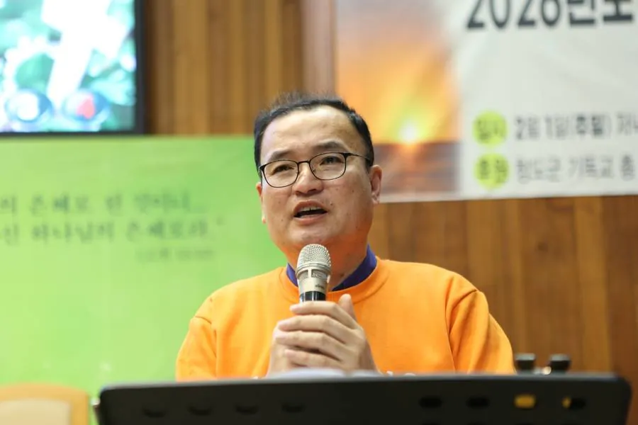
기타 세션 이만형 목사(중남교회)
어쿠스틱 기타 연주로 찬양의 뼈대를 세우는 이만형 목사는 장터 무대의 리듬과 화음을 든든히 받친다.
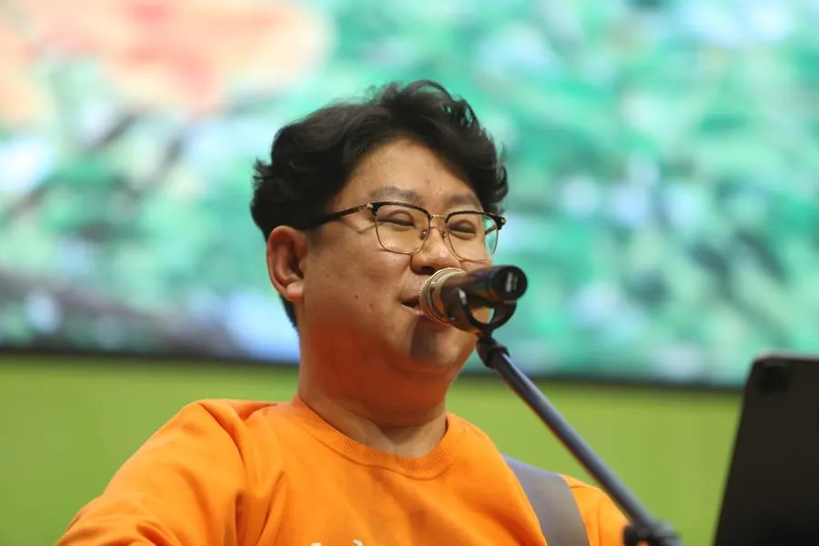
여기에 홍승열 목사의 사모 황영미 사모가 반주로 힘을 보태고, 박진규 집사와 조수용 집사도 찬양단과 함께한다. 목회자 다섯 명의 사역이 사모와 집사들의 헌신으로 더욱 풍성해지는 것이다.
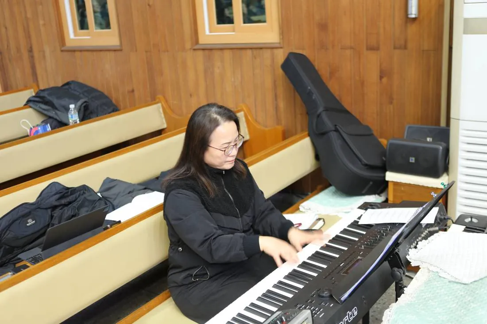
장터로, 교회로, 사역의 지경을 넓히는 찬양
로드 찬양단의 현장은 화려한 무대가 아니라 삶의 터전이다. 청도군 금천면을 기점으로 단원들의 소속 교회가 위치한 지역의 장날마다 정기적으로 찬양 전도를 이어 가고 있으며, 동곡장·산내장·청도장에서 한 달에 한 번씩 노방 찬양을 드린다. 청도 전 지역을 복음화하겠다는 목표 아래 사역 반경도 꾸준히 넓혀 가는 중이다.
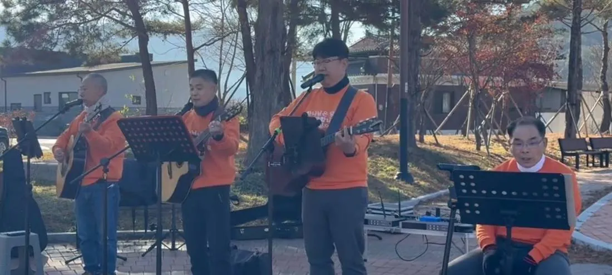
이들의 사역은 거리에만 머물지 않는다. 각 지교회의 전도 축제와 지역 행사에 초청받아 음악적 완성도와 복음적 메시지가 어우러진 찬양을 선보이고, 규모 있는 행사에서는 신지교회 악기팀(Worship Band)과 긴밀히 협력해 한층 풍성하고 역동적인 예배의 자리를 섬긴다.
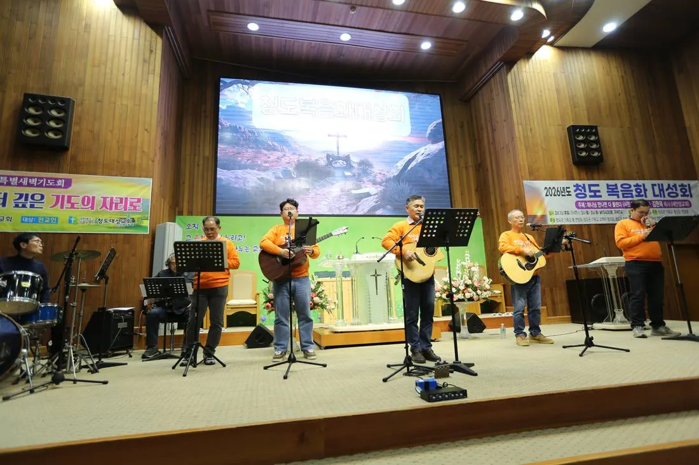
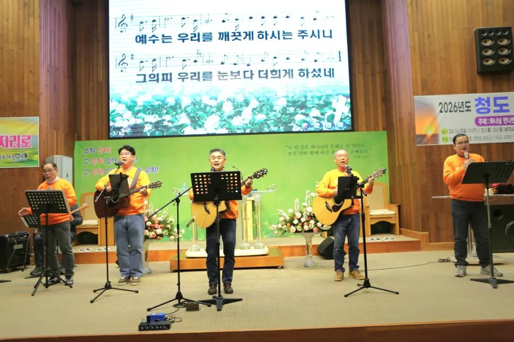
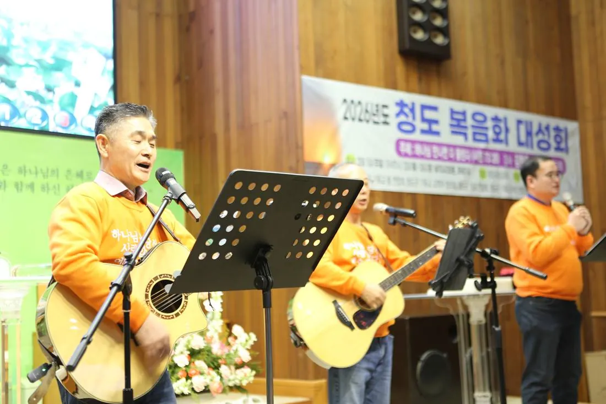
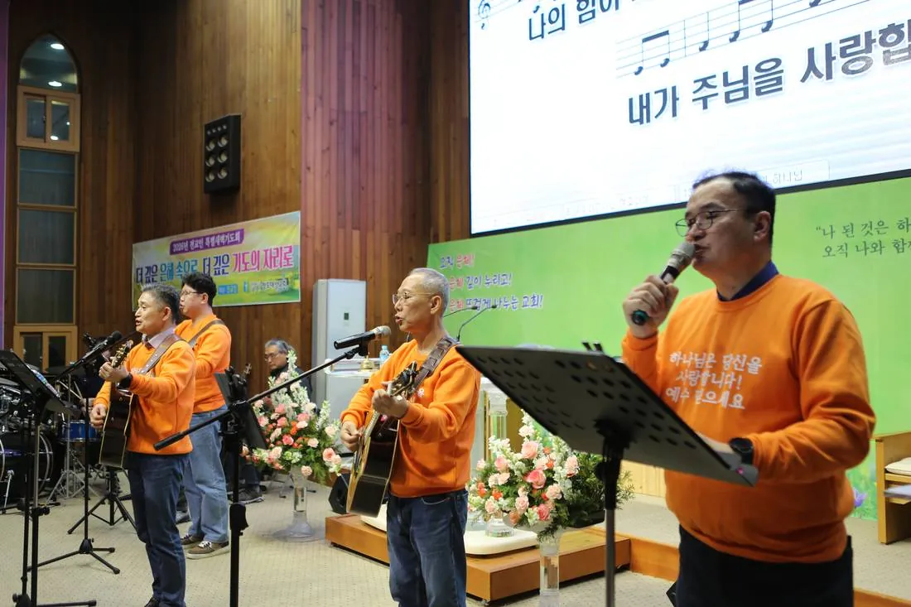
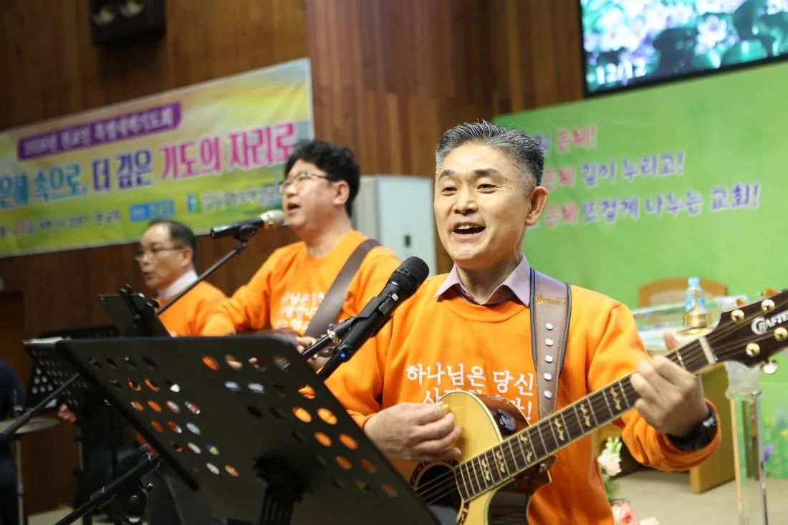
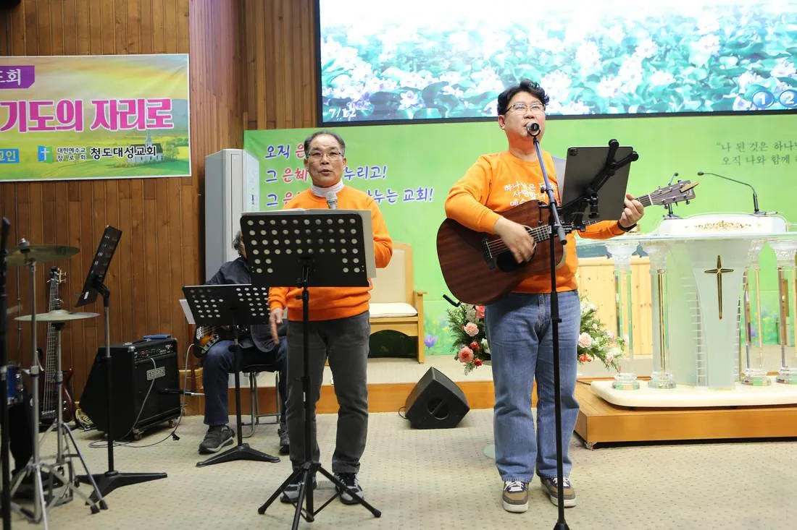
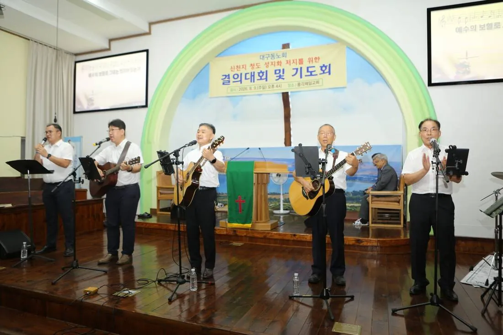
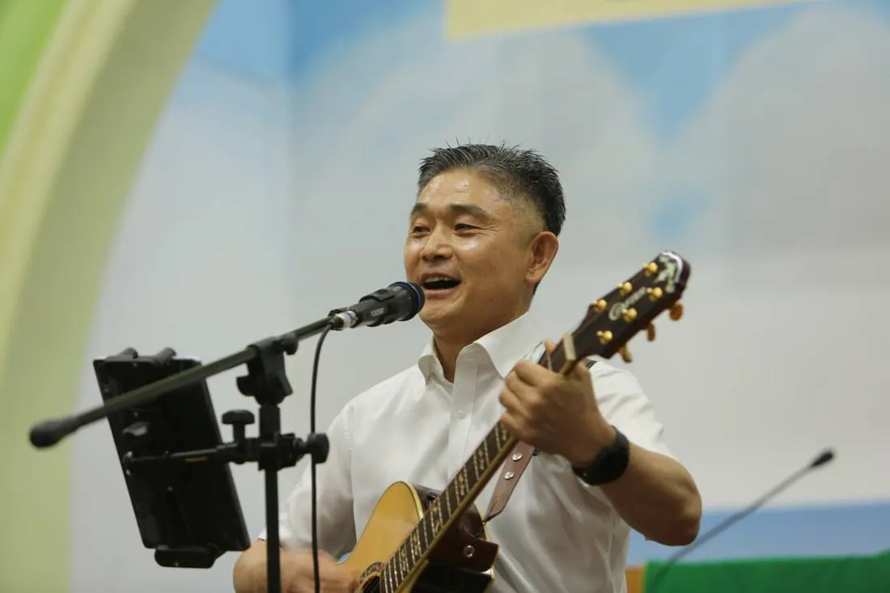
세 가지 사역 목적
로드 찬양 선교회는 ‘찾아가는 복음’을 실천하며 다음과 같은 목적을 품고 사역한다.
- 노방 찬양 전도 — 지역 장날, 삶의 터전 현장으로 들어가 찬양으로 마음의 문을 열고 전도 용품을 나누며 생명의 복음을 선포한다.
- 지역교회 사역 지원 — 전도 사역에 도움이 필요한 지역교회들과 연합해 찬양 집회와 전도 행사를 지원하며 동역한다.
- 찬양의 일상화 — 교회의 문턱을 낮추고 대중적인 찬양과 복음적 메시지로 지역 사회에 기독교 문화를 확산시킨다.
피를 나눈 형제처럼, 외로움이 사라진 목회
로드 찬양단을 곁에서 지켜본 이들의 눈에 다섯 목회자는 마치 피를 나눈 형제와 같다. 어려운 강소교회 목회의 현장에서 서로 의지하며 고민을 나누고 대화하는 사이, 고독하고 외로운 목회 현실 속에서도 그들의 마음과 몸은 건강하다. 길거리 찬양 전도회를 가질 때마다 하나님이 주신 에너지가 넘치고, 얼굴에는 웃음과 건강이 흘러넘친다.
총회와 한국교회에 던지는 울림
로드 찬양단의 이야기가 청도 한 지역의 미담으로 끝나지 않아야 하는 까닭은 오늘의 교단이 마주한 현실 때문이다. 지역의 강소교회들이 인적·재정적 자원의 한계를 호소하는 시대에, 다섯 목회자는 ‘없는 것을 탓하기보다 있는 것을 나누는’ 길을 택했다. 이 사역이 총회 앞에 놓는 물음과 교훈을 다음과 같이 짚어 본다.
- 연합의 실제적 모델 — 시찰회는 교단 조직의 가장 작은 지역 단위다. 그 시찰 안의 목회자들이 회의와 행사를 넘어, 악기와 마이크를 함께 들고 현장에서 동역하는 모습은 ‘연합’이 구호가 아니라 삶임을 보여 준다.
- 약함을 강함으로 바꾸는 협력 — 한 교회가 감당하기 어려운 사역도 다섯 교회가 역할을 나누면 가능해진다. 작은 교회들이 서로를 섬기며 자원을 채우는 방식은 지역교회 목회의 지속 가능성에 대한 하나의 답이 될 수 있다.
- 교회 문턱을 낮추는 찾아가는 전도 — 교회 안에서 사람을 기다리는 대신, 장날의 삶의 현장으로 들어가 찬양으로 마음을 여는 방식은 세대와 계층의 벽 앞에서 고민하는 한국교회에 신선한 전도 전략을 제시한다.
- 목회자의 고독을 치유하는 공동체 — 홀로 견디는 강소교회 목회의 외로움을 동료 목회자와의 교제와 찬양이 씻어 낸다. 목회자 돌봄이 교단의 과제로 떠오른 지금, 이 모임은 ‘서로가 서로의 돌봄이 되는’ 자생적 모델이다.
- 막힌 담을 허는 화합의 발걸음 — 로드 찬양단은 지역의 한계를 넘고 교파의 한계를 넘어 주님처럼 중간에 막힌 담을 허물겠다는 비전을 품고 있다. 갈등과 분열의 소식이 잦은 교계에서 이 비전은 그 자체로 위로이자 도전이다.
산동과 산서를 하나로
청도는 용각산 곰티재를 중심으로 매전·금천·운문 등 산동 지방과 청도·화양·풍각 등 산서 지방으로 나뉜다. 홍승열 목사는 로드 찬양단이 앞으로 이 산동과 산서를 하나로 만드는 데 큰 역할을 할 것이라고 강조한다. 찬양이 지리적 경계를 넘어 마음을 잇는 다리가 되기를 소망하는 것이다.
로드 찬양단은 앞으로 대외 활동도 늘어날 전망이다. 불러 주시면 언제든 달려갈 준비가 되어 있으며, 헌신과 봉사로 이웃을 섬기겠다는 것이 이들의 다짐이다. 청도 지역에서는 이들의 사역에 대한 성도들의 기대도 커지고 있다.
길 위에서 다시 듣는 복음의 노래
로드 찬양 선교회는 화려한 무대보다 낮은 곳, 소외된 이들이 있는 ‘길 위’를 지향한다. 이들의 찬양이 메마른 영혼에 단비가 되고 잠든 영혼을 깨우는 나팔 소리가 될 때까지 주님이 주신 이 길을 기쁨으로 달려가겠다는 다짐은, 교단의 크고 작은 회의와 행사 속에서 우리가 잊고 지내던 복음의 첫 마음을 떠올리게 한다.
한 달에 한 번, 장터 한켠에 마이크를 세우는 다섯 목회자의 발걸음이 총회의 모든 시찰과 노회에 또 다른 ‘길 위의 찬양’을 낳는 시작이 되기를 기대해 본다. 길 위의 찬양단, 로드 찬양단에게 주님의 축복이 영원하기를 바란다.